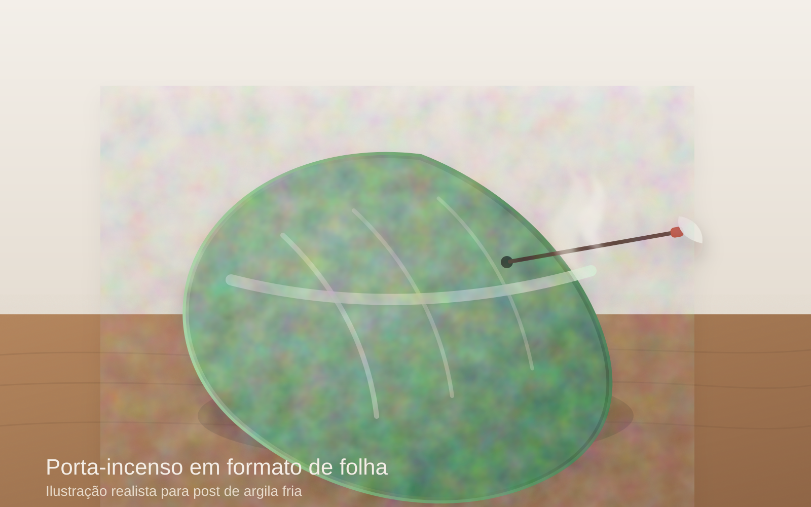

Artesanato

Meu primeiro post: como comecei a criar peças com argila fria
Neste post conto como comecei do zero com argila fria, usando poucos materiais para modelar peças decorativas simples e delicadas.
Ler post completoEste é meu cantinho para compartilhar rotina, aprendizados, ideias criativas e pequenos momentos que tornam os dias mais leves.
Selecao principal
Artesanato

Neste post conto como comecei do zero com argila fria, usando poucos materiais para modelar peças decorativas simples e delicadas.
Ler post completoDia a Dia
Pequenas mudanças de organização e autocuidado que fizeram diferença real na minha semana.
Ler postCasa
Sugestões práticas para dar um toque pessoal aos ambientes sem gastar muito.
Ler postConteudo Digital
Um guia simples para planejar, gravar e publicar seus primeiros videos com mais seguranca.
Ler post